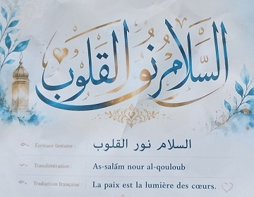
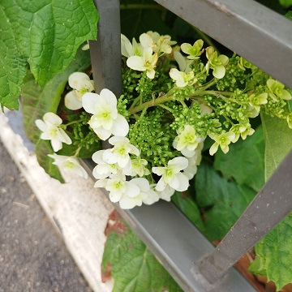

La paix est une fleur
| En ces années, ces mois et ces jours pathétiques
|
| Plutôt que de cultiver les plantes qui font peur au moment d'Halloween, FLeurs SauVages de l'Yonne et d'ailleurs, en abrégé FLSVY ne peut abandonner l'idée que la paix est une fleur et que les graines s'oublient |
| Les fleurs de l'âge fauchées sur les champs de bataille font de jolis bouquets au pied des monuments aux morts pour la Patrie PIEM, au revoir et encore merci. © Le cherche midi éditeur, 1993. |

| [...] on doit accueillir dans son cerveau tout ce qu’il peut contenir de notions et se souvenir que le domaine intellectuel est un paysage illimité et non une suite de petits jardinets clos des murs de la méfiance et du dédain. Remy de Gourmont. 1899. Esthétique de la langue française. |

Hydrangea quercifolia W.Bartram, 1791, hortensia à feuilles de chêne,
d'origine lointaine et semblant aspirer à la liberté.
Vu dans une rue de Courbevoie (Hauts-de-Seine) le 29 mai 2026.
Bienvenue Mode d'emploi Vos remarques à formuler